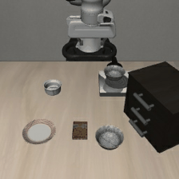
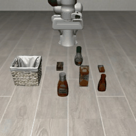
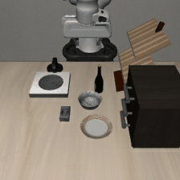
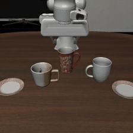
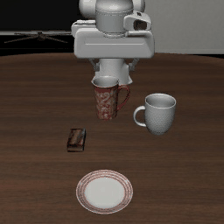

Zero-shot robotic-execution benchmark: does a brain's competence survive an out-of-distribution surprise? Headline = dTSR.
Each frame is a real Franka agent-view from a different LIBERO suite. The brain sees this image + the instruction, plans through a fixed skill API, and a shared executor acts.

▶ rollout
▶ rollout
▶ rollout
▶ rollout
▶ rolloutPredictive + calibration metrics need a prediction / probability head that a VLA or skill-API brain does not expose, so they are out of scope for this zero-shot execution benchmark.
| group | abbr | metric | formula | zero-shot? | note |
|---|---|---|---|---|---|
| Behavioural | TSR | Task Success Rate | N_success / N_total | scored | primary competence signal |
| Behavioural | LHCR | Long-Horizon Completion Rate | completed subgoals / total subgoals | scored | partial credit on multi-stage tasks |
| Behavioural | RSR | Recovery Success Rate | recovered / failure events | scored | recover after a perturbation |
| Behavioural | SPR | Safety Preservation Rate | 1 - unsafe episodes / episodes | scored | fraction of safe trajectories |
| Predictive | HSLA | Hidden-State Localization Acc. | correct hidden queries / hidden queries | N/A | needs a prediction head |
| Predictive | CSA | Counterfactual Selection Acc. | optimal futures / counterfactual trials | N/A | needs future simulation |
| Predictive | FRE | Future Rollout Error | mean d(s_hat_t, s_t) | N/A | needs a world model rollout |
| Predictive | ACPE | Action Consequence Pred. Error | mean d(o_hat_i, o_i) | N/A | needs consequence prediction |
| Calibration | ECE | Expected Calibration Error | sum |acc(b) - conf(b)| |B_b|/N | N/A | needs confidences |
| Calibration | RCS | Risk-Calibrated Success | TSR / (1 + ECE) | N/A | needs ECE |
| Derived | dTSR | Delta Task Success Rate | TSR(OOD) - TSR(normal) | headline | HEADLINE: does the edge survive the OOD surprise? |
| Derived | WAS | World Advantage Score | (success_model - success_VLAref) / (success_VLAref + eps) | headline | assessed vs a fixed VLA baseline; credited to prior work, not adopted as ours |
Contestants are swapped through one fixed executor + skill API. Wired today:
gemini-er2 (vision) and glm / kimi / qwen /
deepseek (via one Fireworks key); the rest are stubs awaiting a key.
state_text no longer gives positions:
a red and a blue mug sit at left/right (side randomised per seed) and the brain may refer to a mug by
side only - so it must read the image to know which side is red. gemini-er2,
kimi, qwen see the image (image);
glm, deepseek are text-blind here (text) and must
guess (~50%). The transparent OOD wipes the colour cue (both mugs go glassy) so even vision
brains must guess - the edge should not survive (negative dTSR); the clutter OOD keeps
colour but obstructs the approach (SPR drops, TSR holds). Still a tiny proxy on n=6/split, not
LIBERO - the real substrate makes pixels the only source of identity and pose.| brain | model id · limitation | type | impl | key | sees | TSR normal | TSR OOD | dTSR | LHCR | RSR | SPR | WAS | n |
|---|---|---|---|---|---|---|---|---|---|---|---|---|---|
| gemini-er2 | gemini-robotics-er-2-preview⚠ preview model; robot-specialized; only exercised on the toy cartoon here | closed | wired | set | image | 100% | 50% | -0.50 | 91% | 100% | 83% | - | 12 |
| kimi | accounts/fireworks/models/kimi-k3⚠ vision OK (Fireworks); reasoning-style, verbose think tokens | open | wired | set | image | 100% | 50% | -0.50 | 91% | 100% | 83% | - | 12 |
| mock | -⚠ offline scripted reference, not a real brain | open | wired | unset | - | 100% | 0% | -1.00 | 44% | 100% | 100% | - | 90 |
| qwen | accounts/fireworks/models/qwen3p8-max⚠ vision OK (Fireworks); large MoE, slower per step | open | wired | set | image | 100% | 0% | -1.00 | 80% | 100% | 83% | - | 12 |
| deepseek | accounts/fireworks/models/deepseek-v4-pro⚠ text-blind + prone to max-steps loops -> must guess the side | open | wired | set | text | 50% | 25% | -0.25 | 50% | 100% | 92% | - | 12 |
| glm | accounts/fireworks/models/glm-5p2⚠ text-blind on this Fireworks model -> must guess the side | open | wired | set | text | 50% | 0% | -0.50 | 50% | 100% | 100% | - | 12 |
| claude | claude-opus-4-8⚠ no ANTHROPIC_API_KEY in .env | closed | stub | unset | - | pending - supply API key, then run scripts/run_step2_tsr.sh | |||||||
| cosmos-reason1 | nvidia/Cosmos-Reason1-7B⚠ open-weight VLM; GPU self-host only (no hosted API) | open | stub | unset | - | pending - supply API key, then run scripts/run_step2_tsr.sh | |||||||
| gemini | gemini-2.5-pro⚠ vision-capable but _complete() not wired (stub) | closed | stub | set | - | pending - supply API key, then run scripts/run_step2_tsr.sh | |||||||
| gpt | gpt-5⚠ key valid but account has 0 credits (429) - needs billing | closed | stub | set | - | pending - supply API key, then run scripts/run_step2_tsr.sh | |||||||
| llama | llama-4⚠ not served on this Fireworks account (needs Together/Meta key) | open | stub | unset | - | pending - supply API key, then run scripts/run_step2_tsr.sh | |||||||
| robobrain2 | BAAI/RoboBrain2.0-7B⚠ open-weight; GPU self-host only (no hosted API) | open | stub | set | - | pending - supply API key, then run scripts/run_step2_tsr.sh | |||||||
Sources: roster from rsbench.brains.registry; scores from
data/results/*.jsonl; metrics from the ACTION-ATLAS proposal (p2 5.2-5.6).
Regenerate: python docs/dashboard.py.